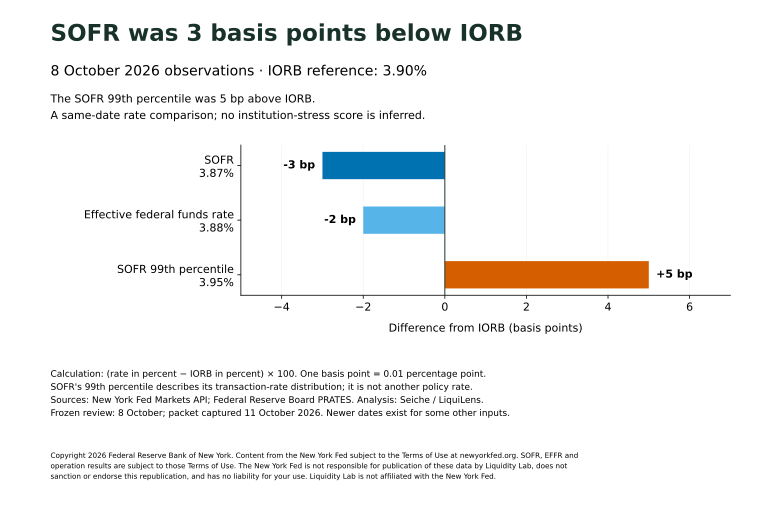

Seiche / US dollar funding · Dated evidence brief
SOFR was 3 basis points below IORB on 8 October
SOFR was 3.87%, compared with IORB at 3.90%, on 8 October 2026. The SOFR–IORB difference was −3 basis points; the SOFR 99th percentile was 3.95%, or 5 basis points above IORB.
Prepared 11 October 2026 · Observation horizon: 8 October 2026 · Revision 1
This comparison separates the central SOFR fixing from the upper end of its transaction-rate distribution. It identifies where the reported rates stood relative to IORB on the same day. It does not, by itself, show whether funding stress was increasing or decreasing.



Exact chart data and source URLs · Machine-readable brief
What the packet contains
The frozen review includes nine observations. Reserve balances refer to the weekly average for the week ended 7 October; the remaining rows refer to 8 October. The $B unit means billions of US dollars. In particular, $0.003 billion of standing-repo usage equals $3 million, not zero.
| Observation | Value | Unit | Observation date | Source |
|---|---|---|---|---|
| SOFR | 3.87 | % | 2026-10-08 | Original publisher |
| Effective federal funds rate | 3.88 | % | 2026-10-08 | Original publisher |
| Interest on reserve balances (IORB) | 3.90 | % | 2026-10-08 | Original publisher |
| SOFR 99th percentile | 3.95 | % | 2026-10-08 | Original publisher |
| SOFR transaction volume | 2963 | $B | 2026-10-08 | Original publisher |
| Reserve balances: weekly average | 3029.659 | $B | 2026-10-07 | Original publisher |
| Treasury General Account: opening balance | 885.783 | $B | 2026-10-08 | Original publisher |
| Overnight reverse repo: accepted amount | 0.335 | $B | 2026-10-08 | Original publisher |
| Standing repo: morning + afternoon accepted amount | 0.003 | $B | 2026-10-08 | Original publisher |
Calculation and independent source check
SOFR–IORB = (3.87 − 3.90) × 100 = −3 basis points. The SOFR 99th-percentile difference is (3.95 − 3.90) × 100 = +5 basis points. One basis point is 0.01 percentage point. No composite score, stress threshold or forecast is computed.
The media build independently downloaded the New York Fed Markets API, Federal Reserve Board PRATES and H.4.1, and US Treasury Daily Treasury Statement responses. It selected the packet's economic dates and reconciled all nine numerical values exactly using decimal arithmetic. It also checked the packet manifest hashes and matching CSV/JSON. This is an operator-performed reproducibility check, not an independent third-party audit.
Rates retain publisher precision. Reserves and Treasury cash convert millions to billions; overnight operation amounts convert dollars to billions. Standing-repo amounts sum the morning and afternoon overnight results only when both are present. Detailed methodology and attribution · Dataset contract · Exact validation record.
Dates, limits and revisions
The source packet was captured at 2026-10-11T01:03:32.137894+00:00 and first archived at 2026-10-11T01:03:35.101024+00:00. Our separate source reconciliation completed at 2026-10-11T01:07:50.859451+00:00. These are different from the economic observation dates.
This is a fixed common-horizon review. The frozen packet flags newer entries for IORB (13 October) and overnight operations (9 October); those entries are not substituted into this 8 October comparison. This brief verifies the 8 October IORB value and makes no inference from the later-dated entry.
- A fixed 8 October funding review, not the latest observation for every instrument.
- System funding evidence does not measure an individual institution's liquidity or probability of failure.
- A rate difference alone does not establish rising or falling stress; this brief makes no historical trend claim.
- Reserve balances are a weekly average for the week ended 7 October; other rows have separate source dates.
- Archive time begins at first verified capture. This is not complete historical publisher-vintage data.
- Publisher terms remain attached; chart and API availability do not grant blanket data redistribution rights.
Cite and reproduce
Seiche / LiquiLens, “SOFR was 3 basis points below IORB on 8 October”, 11 October 2026, revision 1. Underlying data: Federal Reserve Bank of New York, Federal Reserve Board and US Treasury. Observation dates: 7–8 October 2026.
Permanent brief URL · Original immutable packet manifest · Retained manifest copy · Retained review JSON · Provenance and acquisition receipts · File checksums.
Source credit and reuse
Copyright 2026 Federal Reserve Bank of New York. Content from the New York Fed subject to the Terms of Use at newyorkfed.org. SOFR, EFFR and operation results are subject to those Terms of Use. The New York Fed is not responsible for publication of these data by Liquidity Lab, does not sanction or endorse this republication, and has no liability for your use. Liquidity Lab is not affiliated with the New York Fed.
New York Fed terms · Federal Reserve Board disclaimer · Treasury data policy. Keep original-publisher attribution, units, dates, modifications and applicable notices when reusing the material. The repository's MIT software licence does not relicense publisher data. No publisher endorsement, exclusive data rights or blanket redistribution licence is claimed.
Corrections and contact
No corrections recorded in revision 1. For a factual query or correction, contact mrinal@liquilens.in and identify the observation, source and date. A material correction will be dated here with its reason; this frozen packet will remain available.